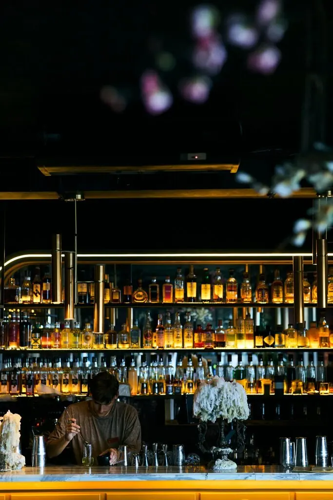
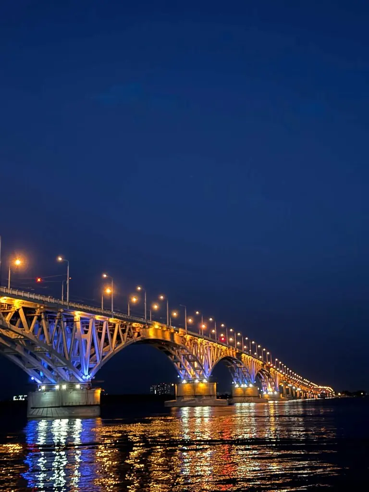
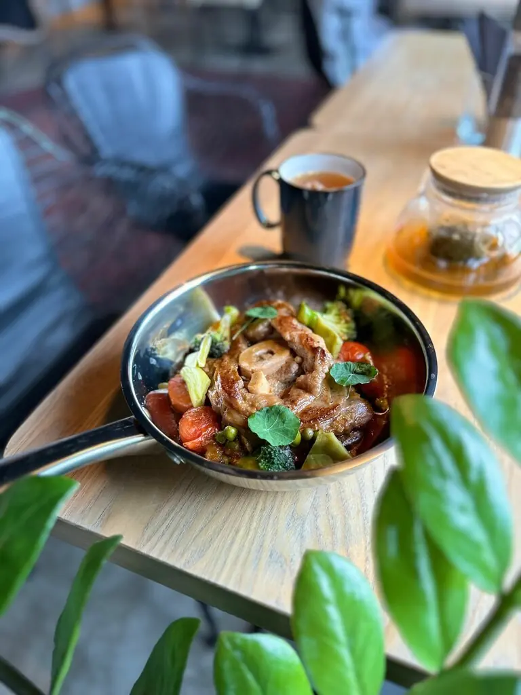
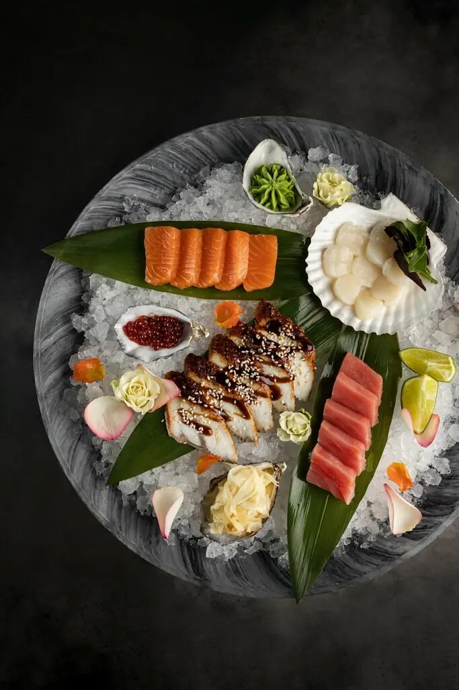
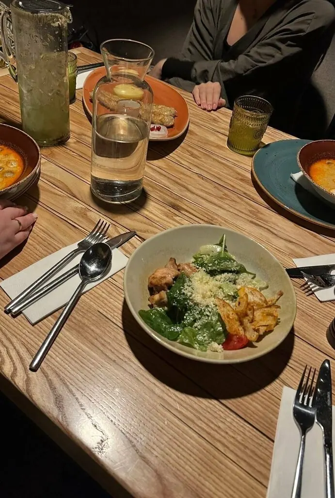
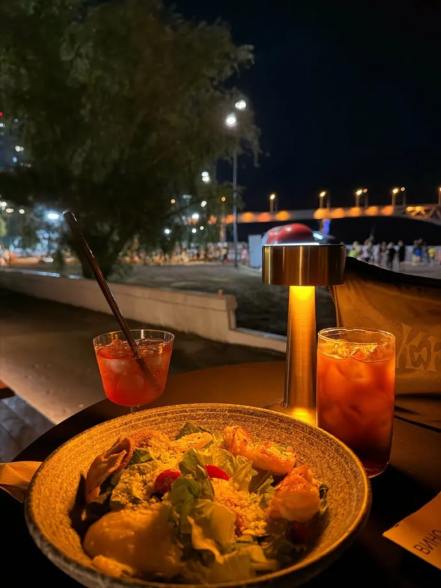

Саратов+7 937 809-99-91
ВОСК
Зажгите свечи, и станет видно главное: веранду на набережной и огни Саратовского моста над Волгой.
4,7 · 1348 оценок
Вид на Волгу

Веранда прямо на набережной. Если вечером прохладно, гостям приносят пледы. Авторские коктейли, кальян и завтраки.




Полное меню с ценами добавим из вашего прайса.
Пламенные отзывы
Очень вкусно, подача топ, вид на Волгу, всё шикарно!Anna S
Приятное заведение, шикарный вид на мост. Коктейли вкусные, есть авторские. Если прохладно сидеть на веранде, то заботливо предлагают пледики.Мария Мороз
Устроили здесь небольшое свидание с видом на знаменитый Саратовский мост.Андрей Яковлев